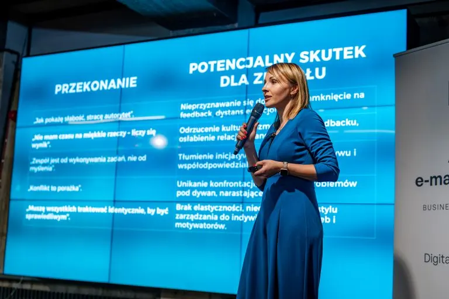

Polecany wpis
Podejmujesz decyzje zmęczona. I dlatego nie wychodzą tak, jak powinny
Myślisz wolniej, opcje się zlewają, a jasnej odpowiedzi nie ma. To nie kwestia inteligencji ani zaangażowania, tylko biologii.
Wpisy dla właścicielek firm: o decyzjach podejmowanych pod presją, przeciążeniu, regeneracji i budowaniu zespołu.
Myślisz wolniej, opcje się zlewają, a jasnej odpowiedzi nie ma. To nie kwestia inteligencji ani zaangażowania, tylko biologii.
Jak decydować z jasności, a nie z presji, i co robić, gdy zostajesz z decyzją sama.

O granicach mówi się wszędzie. Dlaczego tak trudno je praktykować w firmie?
Nowy projekt, zmiana cen, rozstanie z klientem. Sprawdź, z jakiego miejsca decydujesz.
Wiesz, że to Twoja odpowiedzialność, i wiesz, że nie możesz pokazać wątpliwości.
Zmęczenie, które nie mija po weekendzie, i to, jak wpływa na Ciebie i firmę.
Zrobiłaś wszystko, a i tak zasypiasz z poczuciem, że wciąż za mało.
Z zewnątrz wszystko wygląda dobrze. W środku rośnie zmęczenie, które nie mija.
Ciało jest zmęczone, a głowa dalej pracuje. Co się zmienia, gdy dajesz sobie chwilę.
Style działania, różnorodność w zespole i rozwój małej firmy bez wielkiego budżetu.

Co widzisz w zachowaniu ludzi i co nimi kieruje. Jak działa model DISC D3.
Kolejne osoby, procesy i potrzeba porządku. Jak rosnąć, nie przepalając pieniędzy.
Cztery obszary, od których zaczyna się świadome budowanie zespołu.
Masz pytanie? Chcesz porozmawiać o współpracy? Napisz albo zadzwoń. Zacznijmy od rozmowy.
Napisz do mnie